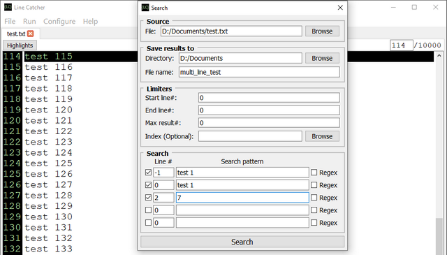

Getting Started Guide
Table of Contents:
Overview
Line Catcher (LC) is an advanced programmable log parsing tool aimed to simplify and save time on viewing, searching, and parsing large text files.
| Issues with large files | How we solve them |
|---|---|
| Large files are hard to open since they do not fit into memory | LC keeps only the required part of the file in memory while still allowing fast navigation using indexes. Indexes are generated the first time file is opened. |
| Searches are time-consuming. For example, searches on a file of 50GB can take over 30 mins; tweaking search parameters would mean re-running this lengthy process many times. | LC is optimized for fast file processing. While there are limits to how fast a file can be read since we are bound by disk read speeds, we can search smarter by limiting the amount of lines to process. LC offers a number of tools to limit search area including reusing previous search results. As an example, you can first run a general search to note points of interest (generate an index), then run a more detailed search that narrows down results from the previous search. As a result, the next search can be significantly faster than the first. |
| There are too many results. Searching a large file can produce thousands of results, most of them may be irrelevant. | LC allows defining very specific search criteria to retrieve only relevant results. Multi-line search enables using information from adjacent lines to include more context in the search. |
| Extracting information is challenging and often requires custom parsing scripts/applications. | LC contains an embedded Lua scripting engine allowing you to write a custom parser and output data in any format. |
Application features
The LC version 1.1 adds new functionality:
The LC version 1.0 provides the following functionality:
System Requirements
Using Line Catcher
How-to: Open and view large files
On launching LC, you will see the main application screen where you can access key menu options:
Open a file to view by clicking “File” >> “Open” >> “Data”. A browsing window will pop up where you can navigate to the desired file directory. Once you’ve clicked “Open”, the file contents will be displayed in the file viewer area.
The first time you open a file, LC will generate indexes to enable random access. Line navigator lets you see the total number of lines, as well as swiftly jump to a specific line by typing its number in the line navigator window. Indexes can be set to be automatically deleted after closing application by enabling "Cleanup files on closure" setting.
How-to: Search and open search results
To search a file, click “Run” >> “Search” to open a search window.

After the search is complete, a search viewer window will open at the bottom of the file viewer area. You can drag this window up or down to reduce or increase its size. If your case requires more specific search parameters than UI permits, refer to How-to: Scripting section

Search results (index file .lcidx) are persisted to file due to their potential size as well as to allow reuse in subsequent runs. You can open the results output file by clicking “File” >> “Open” >> “Index”. The results file contains full path to the associate data file. Consequently, opening the index file will result in the data file opening as well, unless it is already open. If data file is not found at the provided path, Line Catcher will also look in the index's local directory for it. Search result files can be set to be automatically deleted after closing application by enabling "Cleanup files on closure" setting.
How-to: Highlight text
Highlighting functionality becomes available once you have opened a data file. There are three ways to highlight text in the file:
Each time you highlight text, it will receive a random color. You can change the assigned color by going to
Highlights view and clicking on the pattern color that you want to change.
Clicking “X” button next to a highlighted pattern will remove the selection, while “Clear All” will remove all highlighted patterns.
When you close the data file, all highlighting will be removed automatically.
How-to: Multi-line search
Multi-line search allows specifying search parameters for adjacent lines to increase result relevancy. It works by sliding a frame of 21 lines wide down the length of the file allowing to specify search criteria for the current line (equivalent to standard search), previous 10 lines, and subsequent 10 lines. You can think about it as a standard search which searches one line at a time but also allowing you to look back 10 lines and ahead 10 lines.
To run multi-line search, click “Run” >> “Search (Advanced)” to open a search window. Most parameters in this dialog will be identical to the regular search, except for the Search section. The Search section allows specifying search criteria for multiple lines within a 21 line frame (read above) up to a maximum of 5 lines (Scripting allows using all 21 lines. See How-to: Scripting section). Each row contains parameters for a single line. Line # is the number of the line to search relative to the center of the frame (Line #0) and can be any number between -10 and 10 inclusive. Checkbox in front of each row enables using parameters specified in that row. The rest of parameters are identical to the standard search. During search, if the given frame matches all search parameters, the center of the frame will be added to search results.

As an example, lets have a look at the above image. This image depicts configuration for a milti-line search that specifies search parameters for 3 lines:
Line Catcher automatically handles edge cases where a frame hangs off the end of file. If an index is specified in the Limiters section, the search will only touch parts of the file specified by the index with frame center being positioned on each index location. For example, if the index contains line #1000, the above search parameters will check if line #999 contains "test 1", line #1000 contains "test 1", and line #1002 contains "7". If there is a match, then line #1000 (center frame) will be added to search results.
When using multi-line search, consider search performance. Performance for this search is considerably lower than the standard one due to the increased number of comparisons. Therefore, it is recommended to use it with an index as a method for narrowing down results (if the file is large).
How-to: Scripting
Scripting is a powerful feature that allows leveraging Line Catcher's systems to perform custom searches, write parsing algorithms, and extract data. Scripts are written in Lua.
To access scripting view, go to “Run” >> “Script”. A Script Editor window will pop up. We provided some example scripts for you in “<installation directory>/Line Catcher/scripts”.
To run a script, click “Run” button. The console output window will notify you if the script compiled or failed to compile. If you have made any changes to the script, the “Save” button will turn red as a reminder to save the changes. If the file is read-only or located in the read-only directory, "Save" button will be disabled. You can instead use "Save As" button to save file in the directory of your choice.

How-to: Settings
Change font size of your file by dragging the pointer left or right.
Cleanup files on closure by checking the box. It will delete generated index and search results
files automatically on closure. This is disabled by default.
How-to: Keyboard shortcuts
| Function | Shortcut |
|---|---|
| Open data | Ctrl+D |
| Open index | Ctrl+R |
| Close current data | Ctrl+Shift+X |
| Close current index | Ctrl+X |
| Close all | Shift+Esc |
| Search | Ctrl+F |
| Search (Advanced) | Ctrl+Shift+F |
| Open highlights menu | Ctrl+E |
| Open script editor | Ctrl+S |
| View getting started doc | F1 |
| Lua API Docs | F2 |
| Exit | Alt+F4 |